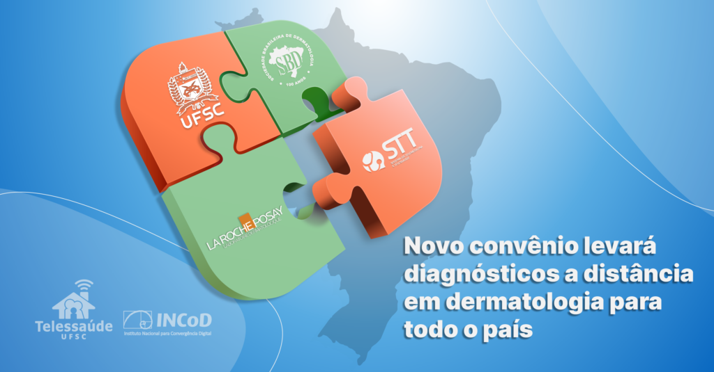
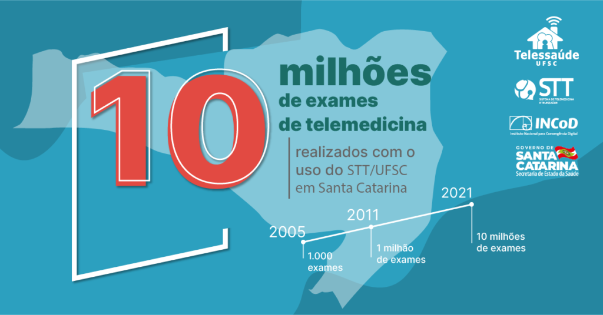
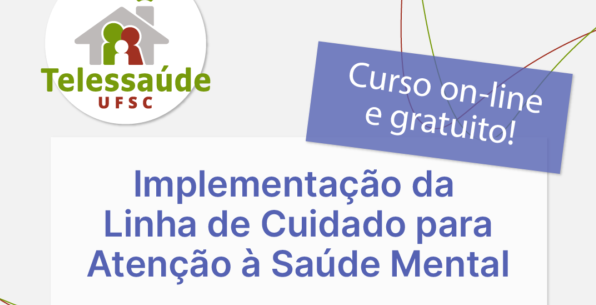
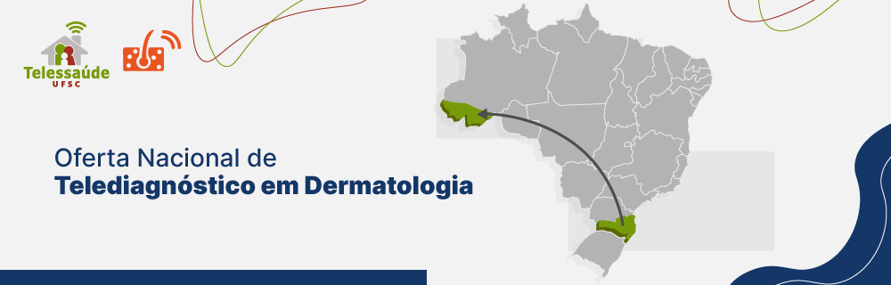

L'Oréal, Sociedade Brasileira de Dermatologia e UFSC iniciam convênio nacional conjunto de Teledermatologia para o SUS
O Laboratório de Telemedicina da UFSC iniciou neste mês um convênio nacional de Teledermatologia para prevenção ao câncer da pele e outras doenças de pele…
08/12/2021

Santa Catarina ultrapassa a marca de 10 milhões de exames de telemedicina com uso do STT/UFSC
Santa Catarina já realizou mais de 10 milhões de exames à distância com uso de tecnologia de telemedicina desenvolvida pela UFSC em parceria com a Secretaria de…
23/11/2021

Telessaúde UFSC lança curso sobre a Linha de Cuidado para a Atenção à Saúde Mental
Novidade! Lançamento de minicurso! Você piscou e tem um novo curso no Telessaúde UFSC! Estão abertas as inscrições para o curso à distância “Implementação da…
14/09/2021

Municípios do Acre começam a utilizar o serviço de Teledermatologia
O Telessaúde UFSC segue expandindo a Oferta Nacional de Telediagnóstico em Dermatologia.Agora estamos também no Acre! No mês passado, estivemos reunidos com a equipe do…
13/09/2021